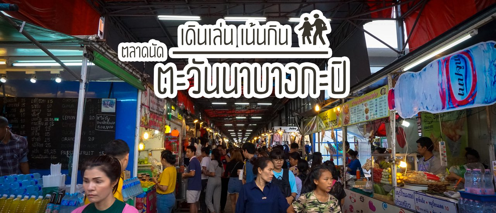
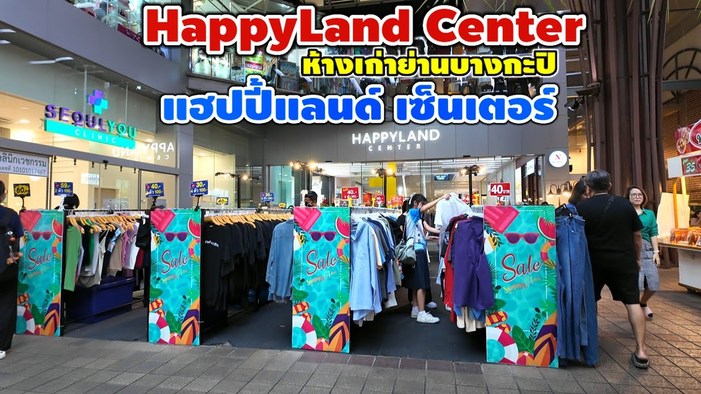
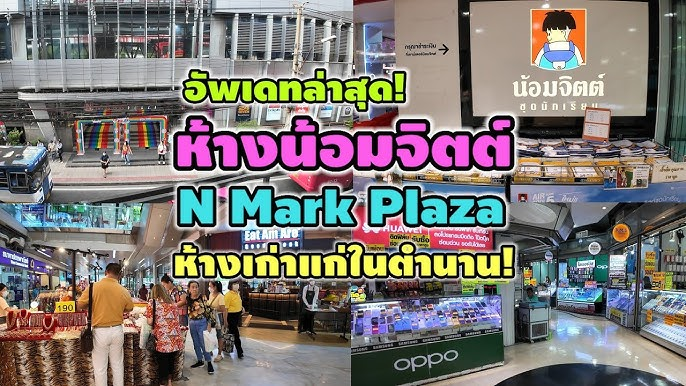

|  |
ตะวันนา มาร์เก็ตตะวันนา บางกะปิ คอมมูนิตี้มาร์เก็ตที่ผสมผสานระหว่างคอมมูนิตี้มอลล์กับไลฟ์สไตล์มาร์เก็ต ตอบโจทย์ความต้องการของคนย่านบางกะปิได้อย่างครบครัน ทั้งสินค้า บริการ และเอ็นเตอร์เทนเม้นท์ พร้อมด้วยศูนย์รวมร้านอาหารและสตรีทฟู้ดอีกมากมาย คงไว้ซึ่งบรรยากาศความเป็นไลฟ์สไตล์มาร์เก็ตที่จําหน่ายสินค้าในราคาคุ้มค่าที่ลูกค้าสามารถจับต้องได้ ตะวันนา บางกะปิ ตั้งอยู่บนถนนลาดพร้าว ใกล้แยกบางกะปิ สามารถเดินทางได้หลากหลายเส้นทาง ทั้งรถส่วนบุคคล เรือโดยสารสาธารณะ รถโดยสารสาธารณะ และรถไฟฟ้าบีทีเอส (สายสีเหลือง, สายสีส้ม) ที่คาดว่าจะแล้วเสร็จในปี 2564 ตะวันนา บางกะปิ เป็นศูนย์รวมแหล่งช้อปปิ้ง กิน ดื่ม เที่ยว แห่งเดียวครบในย่านบางกะปิ มีทั้งโซนเอ้าท์ดอร์และติดแอร์ แหล่งรวมอาหารคาวหวานอร่อยเด็ดราคาประหยัด ร้านดังติดดาว ฟู้ดคอร์ท สตรีทฟู้ด และร้านนั่งชิลขึ้นชื่อมากมาย ตอบโจทย์สายช้อปด้วยสินค้าแฟชั่น-เครื่องประดับ สินค้าไอทีและอุปกรณ์เสริม บริการต่าง ๆ อาทิ คลินิกเสริมความงาม ร้านทำเล็บเพ้นท์เล็บ ร้านสัก ร้านขาย-ซ่อมมือถือ และล่าสุดกับสนามมวย เวิลด์ สยามสเตเดี้ยม สนามใหม่ล่าสุดถือเป็นมิติใหม่แห่งวงการมวยทั้งระบบแสงสีเสียง นับเป็นจุดนัดพบและสังสรรค์สำหรับทุกเพศทุกวัย รวมถึงนักท่องเที่ยวชาวต่างชาติ คลิปวีดีโอ
|
|  |
แฮปปี้แลนด์ เซ็นเตอร์ห้างสรรพสินค้าแฮปปี้แลนด์เซ็นเตอร์ (HAPPYLAND CENTER) ช้อปสบายทั้งแฟชั่นและไอที ทำเลทองย่านบางกะปิ โดดเด่นทั้งสินค้าแฟชั่น เสื้อผ้า กระเป๋า รองเท้า เครื่องประดับ และศูนย์สินค้าไอทีขนาดใหญ่ เปิดบริการทุกวัน ที่ห้างสรรพสินค้าแฮปปี้แลนด์เซ็นเตอร์ มีทั้งหมด 3 ชั้น ชั้น 1 สินค้าแฟชั่น เช่น เสื้อผ้า เครื่องแต่งกาย เครื่องประดับ, ชั้น 2 สินค้าแฟชั่นอินเทรนด์ เช่น เสื้อผ้า เครื่องแต่งกาย เครื่องประดับ ครบครันทุกไลฟ์สไตล์, ชั้น 3 สินค้าไอทีและซ่อมครบวงจร ร้านค้าภายในห้างสรรพสินค้าแฮปปี้แลนด์เซ็นเตอร์ จะมีร้าน COFFMAN จำหน่ายเครื่องดื่มชา กาแฟ, ร้านคักแฮง จำหน่ายขนมปัง โดยห้างสรรพสินค้าแฮปปี้แลนด์เซ็นเตอร์ อยู่ตรงข้ามเดอะมอลล์บางกะปิ อ่านต่อได้ที่ คลิปวีดีโอ
|
|  |
ห้างน้อมจิตต์ บางกะปิศูนย์การค้า เอ็นมาร์คพลาซ่า บางกะปิ เปิดดำเนินการเมื่อ พ.ศ. 2524 ชื่อ น้อมจิตต์ ดีพาร์ทเม้นท์สโตร์ จำหน่าย สินค้าซูเปอร์มาเก็ต และดีพาร์ทเม้นท์ รวมทั้งชุดนักเรียนน้อมจิตต์ พื้นที่ประมาณ 2000 ตรม. คลิปวีดีโอ |